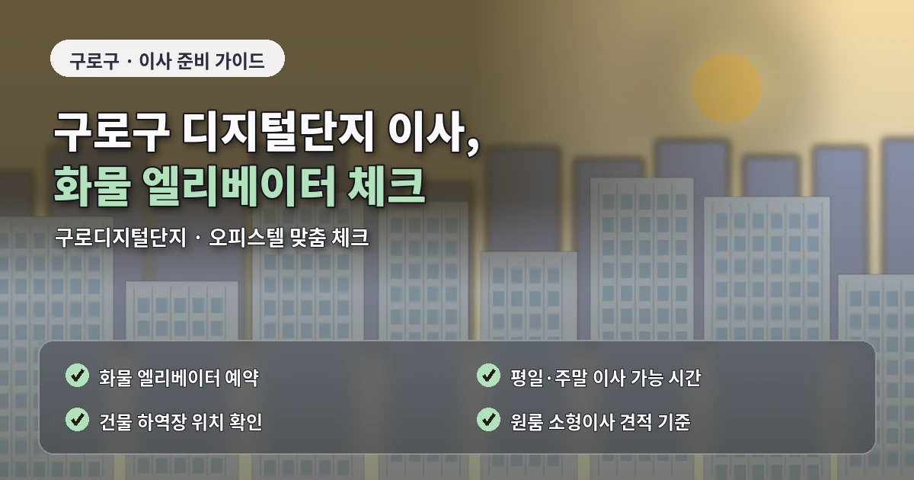
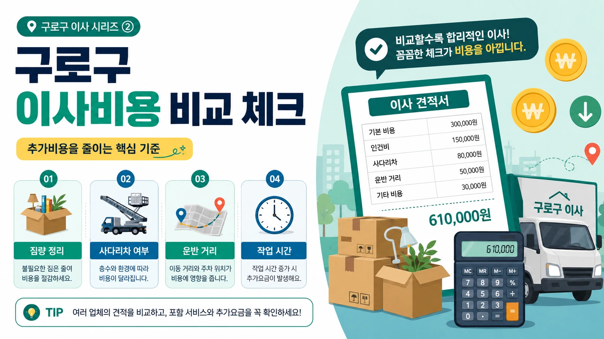

서울 구로구포장이사추천 업체 비교 핵심
구로구 포장이사를 준비한다면
주거 형태와 생활권 특성을 함께 봐야 합니다.
구로동은 오피스텔과 아파트,
상가형 주거가 함께 있고,
개봉동과 고척동은 아파트와 빌라가 섞여 있으며,
신도림동은 대형 아파트 단지와
교통 중심지 특성이 강한 지역입니다.

이런 조건 때문에
구로구 포장이사 비용은
단순 평수보다 작업 동선과 시간대에 따라
차이가 생길 수 있습니다.
비용과 견적이 달라지는 핵심 기준
견적을 받을 때는
짐의 양과 함께 차량 진입 조건을 확인해야 합니다.
화물차가 건물 앞까지 들어갈 수 있는지,
지하주차장 높이 제한이 있는지,
엘리베이터 예약이 가능한지,
사다리차를 세울 수 있는 공간이 있는지
구체적으로 알려주는 것이 좋습니다.
구로동처럼 업무시설과 주거시설이 섞인 곳은
평일 낮 시간에도 차량 통행이 많을 수 있습니다.
작업 차량이 오래 대기하기 어렵다면
이사 시간이 길어지거나
운반 거리가 늘어날 수 있습니다.

이런 상황은 추가비용과 연결될 수 있으므로
상담 단계에서 미리 확인해야 합니다.
업체 비교 전 확인해야 할 사항
구로구 포장이사 업체추천을 찾을 때는
가격보다 견적서의 구성이 중요합니다.
차량 대수,
작업 인원,
포장재 제공 여부,
가전과 가구 보호 방식,
침대나 장롱 분해 조립,
사다리차 비용 포함 여부를
같은 기준으로 비교해야 합니다.
포장이사 저렴한곳이라는 문구만 보고 결정하면
이사 당일 예상하지 못한 비용이 생길 수 있습니다.
특히 고척동이나 개봉동의 빌라 지역은
골목 폭과 주차 위치가 중요합니다.
차량이 멀리 서게 되면
운반 거리가 길어지고
작업자의 이동 시간이 늘어납니다.
계단 이동이 필요한 경우에는
층수와 짐의 무게를 함께 확인해야 합니다.
추가비용을 줄이는 준비 방법
신도림동 대단지 아파트는
엘리베이터 예약과 관리사무소 규정이 중요합니다.
공용공간 보양,
화물 엘리베이터 사용,
이사 가능 시간,
차량 진입 위치를 먼저 정해두면
당일 작업이 훨씬 안정적으로 진행됩니다.
구로구 포장이사 비교견적은
최소 3곳 이상 받아보는 것이 적당합니다.
다만 모든 업체에 같은 정보를 전달해야
실제 비교가 가능합니다.
출발지와 도착지의 조건,
짐의 양,
큰 가구와 가전,
분해가 필요한 물건,
버릴 물건을 정리해두면
견적 오차를 줄일 수 있습니다.
계약 전에는 파손 보상 기준도 확인해야 합니다.
계약 전 마지막 체크포인트
운반 중 흠집,
가전 이동 중 손상,
벽지나 바닥 손상에 대한 기준이
업체마다 다를 수 있습니다.
구두 안내만 믿기보다는
문자나 견적서로 남기는 것이 안전합니다.
구로구 포장이사는
교통과 주거 형태가 다양하기 때문에
업체의 현장 대응 능력이 중요합니다.
비용, 견적, 업체추천 정보를 볼 때도
작업 조건을 얼마나 구체적으로 설명하는지
함께 확인하는 것이 좋습니다.
이 기준으로 비교하면
불필요한 추가비용을 줄이고
더 현실적인 포장이사 선택이 가능합니다.
구로구 포장이사 일정과 차량 동선
구로구는 산업단지와 주거지가 가까운 지역이 있어
시간대에 따라 차량 이동 조건이 크게 달라질 수 있습니다.
구로동과 신도림동은 평일에도 차량 통행이 많고,
개봉동과 고척동 일부 주거지는 골목이나 주차 조건을 확인해야 합니다.
포장이사 견적을 받을 때는 이사 날짜와 시간대도 함께 문의하는 것이 좋습니다.
오전 작업이 가능한지, 오후 작업이면 도착지 예약 시간과 맞는지,
차량 대기가 가능한 공간이 있는지 확인해야 합니다.
시간 조율이 정확하지 않으면 작업이 밀리고
그만큼 추가 인력이나 대기비가 발생할 수 있습니다.
또한 구로구 포장이사는 도착지 조건도 중요합니다.
출발지는 아파트여도 도착지가 빌라라면 계단 운반이 필요할 수 있고,
출발지는 빌라여도 도착지가 대단지라면 엘리베이터 예약이 필요할 수 있습니다.
양쪽 조건을 함께 비교해야 실제 견적에 가까워집니다.
구로구 포장이사는 이사 당일 차량 대기와 작업 시간이 핵심입니다.
견적이 저렴해 보여도 대기비, 장거리 운반비, 계단비가 빠져 있다면
최종 금액은 달라질 수 있습니다.
따라서 계약 전 추가비 기준을 확인하고 같은 조건으로 업체를 비교해야 합니다.
구로구 포장이사 견적은 작업 전 정보가 많을수록 정확해집니다.
큰 가구의 크기, 가전 수량, 박스 예상 개수,
주차 가능 위치를 정리해두면 상담 시간이 줄어들고
업체별 비교도 훨씬 명확해집니다.
자주 묻는 질문
A. 차량 진입, 엘리베이터 예약, 사다리차 여부, 계단 작업에 따라 달라집니다.
A. 관리사무소 이사 예약과 화물 엘리베이터 사용 시간을 먼저 확인해야 합니다.
A. 보통 3곳 이상 비교하면 평균 비용과 서비스 차이를 파악하기 좋습니다.